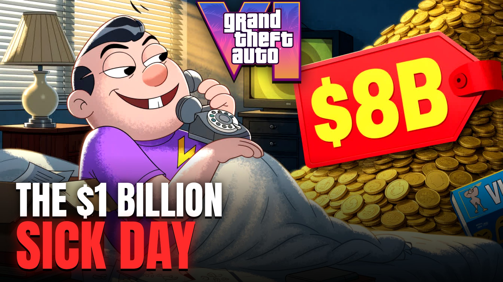

The Billion-Dollar Sick Day
Finance with Stromi · video 07 (GTA 6) · draft launch kit. Chapter 7 still has placeholder launch numbers. Nothing is booked.
Full video (draft v1)
Thumbnail

Title options
- 1GTA 6 and the Billion-Dollar Sick Day: Who Really Got Paid?59 charsRecommended
- 2GTA 6 Cost a Fortune. Here's the $8 Billion Bet Behind It57 chars
- 3Why GTA 6's Launch Day Moved Take-Two's Stock (and Your Wallet)63 chars
Description
On 19 November 2026 a lot of America "called in sick". One economist put the cost at around a billion dollars of lost work. But the biggest number in this story isn't the sick day. It's the bet Take-Two made on one game: years of costs piled up in a jar, a forecast of $8 billion, and a share price that dropped close to a tenth every time the date moved. In this animated explainer we follow Dev (who booked his "flu" in June), Rita (his boss, who noticed), and Priya (a night-shift nurse who owns Take-Two shares). We look at how a game's cost sits on the balance sheet before launch, why GTA V turned into a 13-year golden goose, the Zynga deal and its write-downs, what two delays did to the stock, the $8 billion promise, why an $80 game is cheaper than it sounds (and the console isn't), and what that "billion-dollar sick day" really costs. Plus three money lessons you can use even if you never buy a share. ⏱️ CHAPTERS 0:00 A Country Calls In Sick 0:55 The Eight-Year Cake 2:37 The Goose That Wouldn't Stop 4:25 Seven Percent in a Day 5:44 The $8 Billion Promise 7:15 The $80 Game Is Cheap 8:43 The Billion-Dollar Sick Day 10:25 Launch Week 11:01 Your Wallet: Three Lessons 💬 Did you take the day off, or were you one of the three people in the meeting? Tell us in the comments. 🔔 Subscribe to Finance with Stromi for money, explained simply. Dev, Rita, Priya and the rest of the cast are made-up characters. Their numbers come from public filings and reporting. This channel explains money. It isn't financial advice. Short trailer clips (under 5 seconds each) are from Rockstar Games' official trailers, used for commentary. Grand Theft Auto is a trademark of Take-Two Interactive. This video is not affiliated with or endorsed by Rockstar Games or Take-Two. Sources: Take-Two Interactive 10-K and 10-Q filings and its 9 Nov 2026 results (8-K); Sensor Tower pre-order estimates (Oct-Nov 2026); Circana US hardware data (Aug 2026); US BLS CPI; reporting on José García Montalvo's sick-day estimate (GamesRadar and others); Yahoo Finance and CNBC coverage of the results. Music by Kevin MacLeod (incompetech.com), licensed under Creative Commons: By Attribution 4.0 License, http://creativecommons.org/licenses/by/4.0/ Tracks: Hidden Agenda, Sneaky Snitch, Carefree, Dark Times, Thinking Music, Fluffing a Duck, Investigations, Hep Cats, Gymnopedie No 1. Sound effects: BigSoundBank.com. #GTA6 #TakeTwo #PersonalFinance #Investing #StockMarket
Chapters
0:00A Country Calls In Sick0:55The Eight-Year Cake2:37The Goose That Wouldn't Stop4:25Seven Percent in a Day5:44The $8 Billion Promise7:15The $80 Game Is Cheap8:43The Billion-Dollar Sick Day10:25Launch Week11:01Your Wallet: Three Lessons
Tags
Dashed = constant channel tags (always kept). Others are this video's own.
finance with stromi, stock market explained, finance explained, investing for beginners, money news, economy explained, personal finance, 401k, stock market news, animated explainer, gta 6, gta 6 economy, take-two stock, ttwo stock, gta 6 sick day, gta 6 launch, gta 6 price, rockstar games, video game economics, gta 6 pre ordersPinned first comment
Be honest: did you call in sick on 19 November? Dev did. Rita noticed.